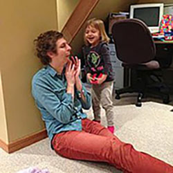
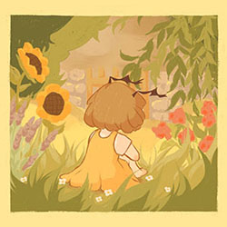
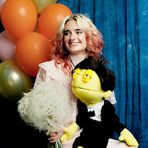
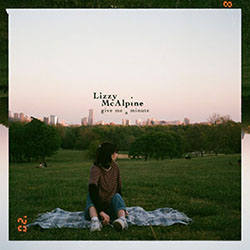
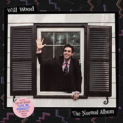
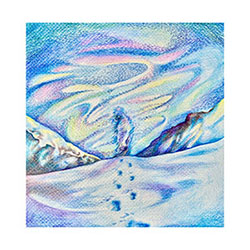

1. Clay Pigeons by Michael Cera

2. overgrown garden by Beetlebug

3. Waste My Wishes by Sophie Traux
4. Suneater by Leanna Firestone
5. Movie Star by Lizzy McAlpine

6. Nothing/Sad N Stuff by Lizzy McAlpine
7. Ruth by Michael Cera

8. I/Me/Myself by Will Wood
